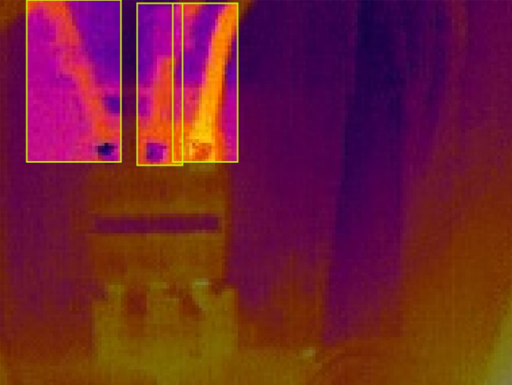
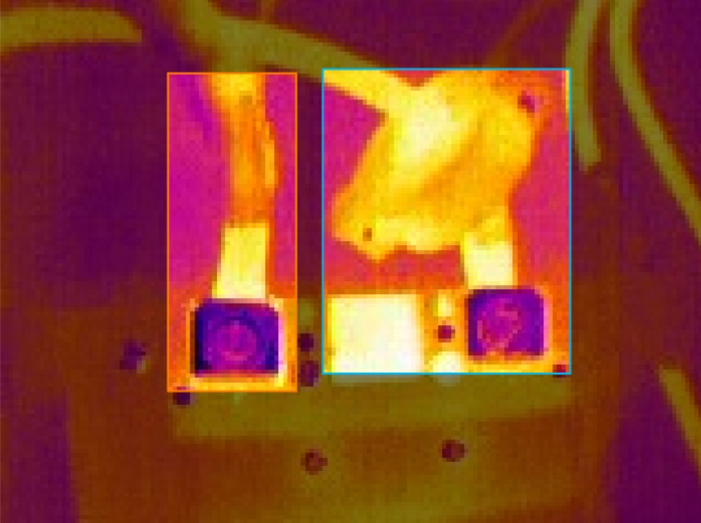
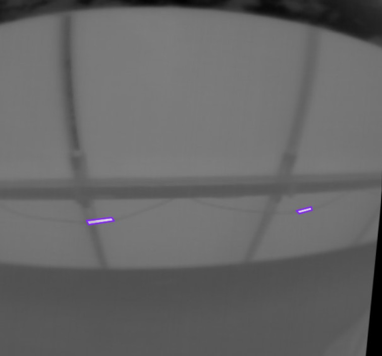
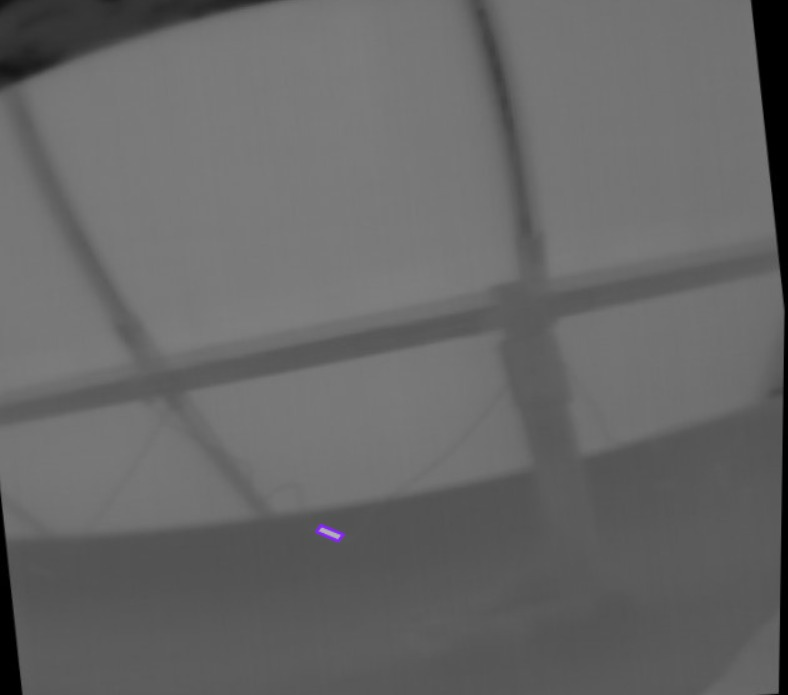

0
Avonlie · DC capacity on the register
Enter your work email and your access code fills in automatically.
Fire risk, not yield, is what drives the vegetation program at Avonlie, and the fire danger period opened on 1 October. The same machine that holds the grass at your height under the panels can read every string while it is there. One pass, two records, starting on a single 5 MWp pilot block.
As we understood it on 24 August, Cape weed and barley grass resist the herbicide options, and barley-grass seed blinds the sheep, so they come off site. That leaves ride-on mowing in a narrow window. A machine that runs continuously holds grass at your specified height through the season instead of letting it climb between visits: a flat vegetation profile, not a sawtooth.
Annual drone thermography is valuable, but it cannot see the underside of the array, and a fault that develops after the flight can sit for months. A hot joint over dry ground is the failure that SCADA does not flag until it is already an incident. Under-panel passes close that gap.
Every pass is also a thermal and visual inspection of everything below the panel, the layer no drone or drive-by sees. These frames are from Aptics deployments elsewhere, not from Avonlie.




All imagery is illustrative and from Aptics work elsewhere. We have not yet visited Avonlie and make no statement about the condition of the site.
A fault that starts at a random moment waits, on average, half the gap between inspections. Every input below is yours to set: put in your own cadence and your own fault count:
This is arithmetic, not a forecast. Average wait is half the inspection gap; fault-days are faults per year × average wait; the Oct–Mar figure applies the share of the year inside the NSW default bush fire danger period (182 of 365 days) and assumes faults are spread evenly through the year. The one-a-year default reflects the annual in-house drone flights described to us on 24 August, the two-passes-a-year default is a starting position for the pilot rather than a commitment, and the fault count is a placeholder, not an Aptics estimate and not a statement about Avonlie. Set them to your own figures and the result becomes yours.
Under the Rural Fires Act 1997 (NSW), owners and occupiers of land have a duty to prevent bush fires on their land and to minimise the danger of one spreading from it. The statutory bush fire danger period runs 1 October to 31 March by default, and the Commissioner can vary it by local area.
The standard at Avonlie is set by your consent conditions and emergency management plan, including the 150 mm grass-height target. Every pass records what was cut, where and when.
Five days on site at Avonlie: onboarding, geofencing, and a thermal-and-visual pass across the block Iberdrola nominates. A$20,000 fixed, excluding GST, plus mobilisation at documented cost + 10% (estimated A$4,500), 50% on execution and 50% on commissioning completion. This trial covers thermal inspection only within the nominated block; vegetation management is priced separately as part of the ongoing subscription below.
A geolocated findings report against Avonlie's own layout, with MC4 and loom heating called out in its own section (the exact fault class behind the fire risk), plus live Aptics Console access for the trial period, the same findings and anomaly view shown in the walkthrough above.
254 MWp at Aptics' standard per-MWp rate, as a single subscription combining vegetation management and thermal inspection, phased by block once the first look confirms the terrain. A 3-year term with 5% escalation. The trial fee is credited in full against onboarding if you proceed within 30 days of the report.
Three things would let us size the pilot properly: which block you would nominate; the minimum clearance under the trackers at maximum tilt, which sets the chassis envelope; and whether the 150 mm height is insurer-, regulator- or internally set, which tells us how the record needs to be kept.
Ben, thank you for the time on the phone. A short call is enough to agree which block, which dates and what you want the findings to feed into. We would also welcome the site visit Matt suggested. Phillip Wagstaff, Aptics.
Email Phillip directly